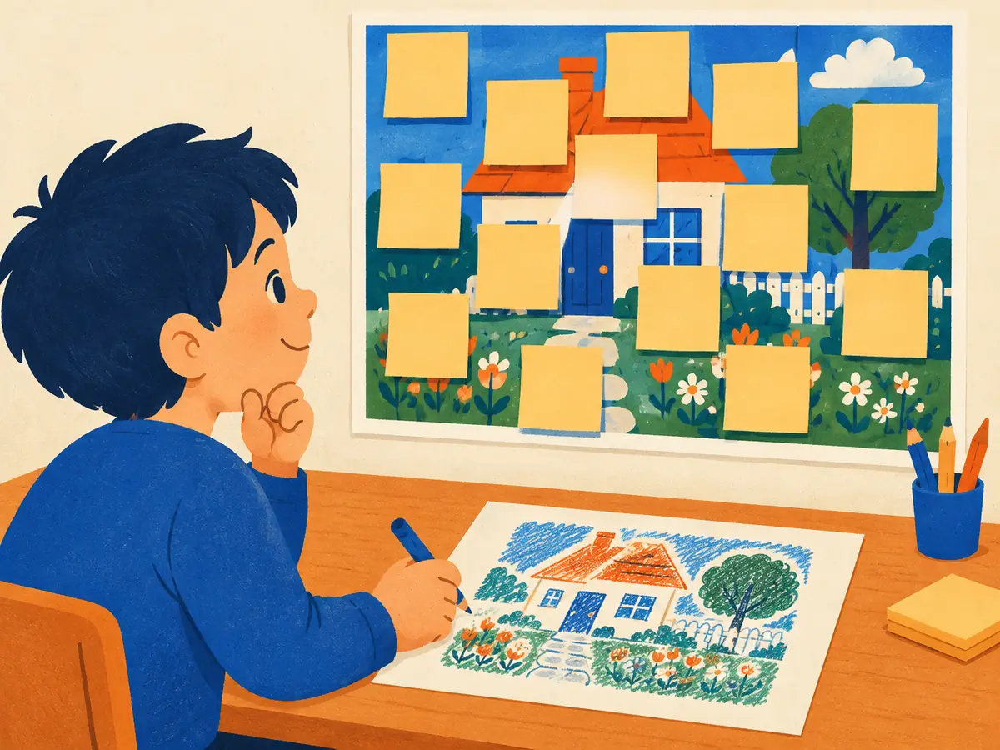

Self-supervised vision (MAE, DINO)
LLMs learn from raw text by predicting what's missing. Can vision models learn from raw images the same way, with no labels and no captions? Yes, and the two big recipes, comparing views and filling in the blanks, now produce the visual features that much of modern AI is built on.
By the end you can
- Explain how contrastive methods (SimCLR, MoCo) and negative-free methods (BYOL, DINO) learn from unlabelled images.
- Walk through a masked autoencoder and compute how much work masking saves.
- Say what DINOv2 and I-JEPA added, and when frozen self-supervised features are the right tool.
Guess first. A wrong guess now makes the answer stick.
BERT learns language by hiding about 15% of the words and predicting them. A masked autoencoder for images works best when it hides about…
- 5% of the patches
- 15% of the patches, like BERT
- 40% of the patches
- 75% of the patches
A model is trained so that two random crops of the same photo get similar vectors. What could go wrong if that's the only rule?
- It can output the same vector for every image and score perfectly
- It will memorise every photo
- Nothing; that rule alone is enough
- The vectors will grow without limit
Why learn without labels?
Supervised pretraining hit a wall of human effort. ImageNet's 1.28 million training images took years of crowd work; the original ViT needed Google's internal, labelled JFT-300M (V1.1). Unlabelled images, by contrast, are essentially free.
Language had already shown the way. GPT-style models predict the next token and BERT (Devlin et al., 2018) predicts masked words, so the text itself is the label (M2.2). This is self-supervised learning (SSL): invent a task whose answer comes from the data, and hope that solving it requires useful features.
Early vision attempts used hand-designed "pretext tasks": predict how an image was rotated (Gidaris et al., 2018), solve a jigsaw of shuffled tiles (Noroozi & Favaro, 2016), or colourise a grey photo (Zhang et al., 2016). They helped, but stayed well behind supervised pretraining. Two families finally closed the gap:
- Joint-embedding methods (2019–2021): show the model two views of the same image and make their embeddings agree.
- Masked image modelling (2021 onward): hide parts of the image and predict them, the vision version of BERT.
How do you know the features are good without labels? Standard tests: a linear probe (freeze the network, train only a linear classifier on top), k-nearest-neighbour classification in feature space, and fine-tuning the whole network on a labelled task.
What does a "linear probe" measure?
- How fast the network runs
- How much task-relevant information is already linearly readable from frozen features
- How many layers the network has
Two views, one embedding: SimCLR, MoCo, BYOL, DINO
SimCLR (Chen et al., 2020) borrows the matching game from CLIP, but both sides are images:
- Take a batch of $N$ images and make two random augmentations of each: random crop and resize, colour jitter, blur, flips. That's $2N$ views.
- Encode every view (a ResNet in the paper), then pass it through a small projection head MLP.
- For each view, its partner is the positive and the other $2N - 2$ views are negatives. The loss is InfoNCE with a temperature, called NT-Xent in the paper.
The augmentations are the whole game: they define what the model should ignore. SimCLR found that cropping plus colour distortion mattered most; without colour jitter, the network cheats by matching colour histograms. With a large batch (4,096), a 4×-wide ResNet-50 matched a supervised ResNet-50 under linear evaluation (76.5% top-1 on ImageNet). The projection head is thrown away after training: the layer before it holds more general features.
MoCo (He et al., 2020; first posted in 2019) attacked the big-batch requirement. It keeps a queue of 65,536 recent embeddings as negatives, produced by a momentum encoder: a copy of the network whose weights are a slow moving average of the main one, $\theta_k \leftarrow m\,\theta_k + (1-m)\,\theta_q$ with $m = 0.999$. The slow copy keeps the queued negatives consistent with each other, so you get many negatives on ordinary hardware.
No negatives needed: BYOL and DINO
Negatives cost compute and can push apart images that really are similar. Can two views simply be made to agree, without collapse? BYOL (Grill et al., 2020) showed yes. An online network, with an extra predictor MLP, learns to predict the output of a target network for the other view. The target gets no gradients; its weights are a moving average of the online network's, as in MoCo. That asymmetry (predictor plus slow target) turns out to be enough to avoid the trivial constant solution in practice.
DINO (Caron et al., 2021), "self-distillation with no labels", applies the same idea to ViTs with a twist from knowledge distillation:
- A student and a teacher ViT both output a softmax over $K$ dimensions (65,536 in the paper). The teacher is a moving average of the student.
- Multi-crop: the teacher sees two large "global" crops; the student also sees several small "local" crops and must match the teacher's output from them. Local-to-global matching teaches "this patch of fur belongs to a whole dog".
- The loss is cross-entropy from teacher to student: $\;-\sum_{k} P_t(x)_k \log P_s(x')_k$, where $x$ and $x'$ are different crops.
- Collapse is avoided by centering the teacher's outputs (subtracting a running mean, so no single dimension always wins) and sharpening them with a low temperature (so the output isn't uniform).
DINO's surprise: the [CLS] token's attention maps in the last layer outline the main objects in an image, a segmentation that nobody trained for. Its frozen features also made excellent k-NN classifiers.
In DINO, what do centering and sharpening the teacher's output prevent?
- Collapse: centering stops one dimension from always winning, sharpening stops a flat uniform output
- Overfitting to the labels
- The teacher from being updated
Masked autoencoders: hide 75%, rebuild it
BERT-style masking for images was tried early, but the breakthrough was MAE (He et al., 2021, "Masked Autoencoders Are Scalable Vision Learners"). Its design rests on one observation: images are far more redundant than text. Hide one word and the sentence may become ambiguous; hide one patch and you can usually interpolate it from its neighbours. So MAE hides most of the image.
Three choices make it work, and make it cheap:
- Very high mask ratio (75%), chosen at random per image, so the task needs a global understanding of the scene.
- Asymmetric encoder–decoder. The big ViT encoder sees only the visible patches, no placeholders. A small decoder, used only during pretraining, receives the encoded patches plus a shared learned mask token in every gap.
- Pixel loss on masked patches only, using mean squared error against each patch's pixels (normalised per patch, which gave better features).
Using only ImageNet-1k images, an MAE-pretrained ViT-Huge reached 87.8% top-1 after fine-tuning, the best result at the time among methods using only ImageNet-1k data. A caveat: MAE features are strong after fine-tuning but weaker than DINO-style features in a linear probe.
Explain like I'm 5

Someone covers a picture of a house and garden with sticky notes, so you can only see a few small bits: a corner of the roof, some grass, part of a window.
Your job is to draw what's hidden. To do it well, you have to know what houses and gardens usually look like: roofs sit on walls, grass is at the bottom. Practise this on thousands of pictures and you become an expert at seeing.
Where it breaks: the model doesn't keep its drawings. The drawing part is thrown away; what we keep is the "understanding" part that it built along the way.
Worked example: what masking saves
ViT-L/16 at 224 × 224, mask ratio 75%.
- Patches: $14 \times 14 = 196$. Visible: $0.25 \times 196 = 49$; masked: 147.
- Per-token work in the encoder (projections and MLPs) scales with the token count: $49/196 = \tfrac14$ of the full cost.
- Attention pairs: $49^2 = 2{,}401$ instead of $196^2 = 38{,}416$, which is $\tfrac{1}{16}$.
ViT-H/14 at 224 × 224 (14-pixel patches), mask ratio 75%.
- Number of patches:
- Visible patches the encoder sees:
- Attention pairs per head per encoder layer: (versus 65,536 without masking)
Why does MAE compute its loss only on the masked patches?
- The visible patches have no pixels
- To save memory in the encoder
- Reconstructing patches the model can already see is trivial and teaches little
General-purpose features: DINOv2 and I-JEPA
By 2023 the goal shifted from "match supervised pretraining" to "build one frozen backbone that works for everything", the vision equivalent of a foundation model.
DINOv2 (Oquab et al., 2023) got there mostly with data and engineering. It built a curated dataset of 142 million images (LVD-142M) by retrieving web images similar to those in trusted datasets, combined the DINO loss with an iBOT-style masked-token loss (Zhou et al., 2021), and trained a 1.1-billion-parameter ViT-g, then distilled it into smaller ViTs. With the backbone frozen and only small heads trained, its features were strong at classification, segmentation, depth estimation and retrieval. Meta's DINOv3 (2025) pushed the same recipe to a 7B-parameter model and a much larger image set.
I-JEPA (Assran et al., 2023) takes a middle road between the two families. Like MAE it masks, but it predicts the representations of hidden blocks, produced by a moving-average target encoder, not their pixels. Skipping pixels means the model needn't waste capacity on textures and noise, and it needs no hand-designed augmentations. The same idea underlies V-JEPA for video.
A rough guide, as of 2026: use DINOv2/v3-style features when you want strong frozen features (retrieval, k-NN, dense prediction with a light head); MAE-style pretraining when you will fine-tune anyway or need a strong initialisation for a big encoder; CLIP-style features (V1.2) when you need a link to language.
What does I-JEPA predict for the hidden parts of an image?
- Their raw pixels, like MAE
- Their representations from a moving-average target encoder
- A caption describing them
Contrast the two big self-supervised recipes: what task does each give the model, and what stops it from cheating?
In SimCLR, what decides which differences the learned features ignore?
- The class labels
- The data augmentations: whatever differs between two views of the same image is treated as irrelevant
- The batch size
- The projection head's width
In MAE, which part sees the mask tokens?
- Both the encoder and the decoder
- Only the encoder
- Neither; masked patches are simply dropped
- Only the small decoder; the encoder sees just the visible patches
BERT masks about 15% of words (its next-token cousin is in M2.2); MAE masks 75% of patches. Why the difference?
- Images are highly redundant, so low masking can be solved by local interpolation; words carry dense meaning, so even 15% is a hard task
- Images have fewer tokens than sentences
- Vision Transformers can't handle more than 25% of the tokens
- It's an arbitrary choice with no effect
You need frozen image features for a k-nearest-neighbour photo search, with no fine-tuning. Which is the most natural choice?
- An MAE encoder, used without fine-tuning
- A randomly initialised ViT
- A DINOv2-style encoder
- The MAE decoder
Key takeaways
- Self-supervised learning makes labels from the data itself; quality is judged by linear probes, k-NN and fine-tuning.
- Contrastive methods (SimCLR, MoCo) match two augmented views and push other images away; augmentations define what's ignored.
- BYOL and DINO drop negatives and avoid collapse with a moving-average teacher (plus a predictor, or centering and sharpening).
- MAE hides 75% of patches, encodes only the visible quarter and reconstructs pixels with a light decoder: cheap and scalable.
- DINOv2 gives strong frozen general-purpose features; I-JEPA predicts hidden parts in representation space.
Add this lesson's cards to your spaced-review deck.